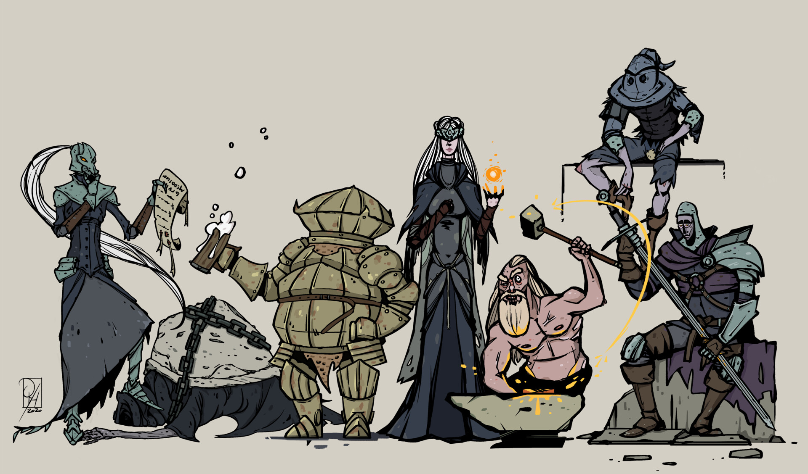
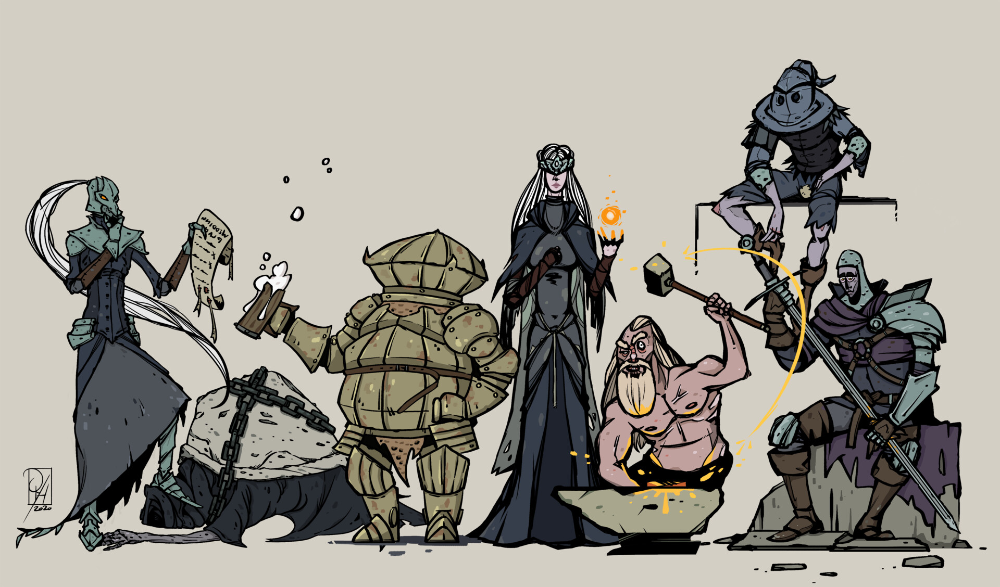

Dark Souls nos trasladará a un mundo antiguo, medieval y fantástico, ambientado en la extraña y peligrosa región
de Lordan. Su jugabilidad seguirá siendo igual de desafiante, sin cambiar ni un solo ápice de sus mecánicas, que
tanto han acabado por influir en el género, y por supuesto sin alterar su dificultad. Las épicas batallas contra
monstruos, esqueletos y caballeros poseídos seguirán estando a la orden del día, presentando a los jugadores una
fórmula de exploración, rol y combate llena de momentos inolvidables y sobrecogedores.
Más allá de mantener su esencia jugable, el título ha ajustado el índice de aparición de hogueras, ha añadido un
acceso rápido para los objetos y la selección de consumibles y se ha revisado la navegación de inventario. El
juego busca ser más justo, equilibrado, cómodo y por supuesto, mejor a nivel visual.

 



COMENTARIOS
José Luis García este videojuego es mi favorito, lo llevo en mi corazon pues me ha enseñado muchisimo, de
hecho realice una reflexion al respecto y los invito a verla mientras disfrutan este remaster, para los nuevos
jugadores espero les ayude a entenderlo desde el principio, para los viejos jugadores espero que despierte
nostalgia y se identifiquen con esta reflexion. un abrazo y espero les guste.
Lola MontañitasDios!! estoy muy Hypeado con esta entrega!! no he dejado de jugar y disfrutar dark souls
desde el primer dia en pc, luego cuando disfrute demon souls, dark souls 3 y el 2 el cual le meti cientos de
cientos de horas a cada uno y no digamos bloodborne!! los que somos seguidores de la saga Souls, no cabe duda
que es una compra asegurada para la coleccion, se que es un remaster del juego, pero me gustaria que incluyeran
nuevas mecanicas de juego algunos bosses y zonas que fueron eliminadas en el primer dark souls y que esta la
incluya!! todos sabemos que habian anillos ropa y bosses eliminados se imaginan que los incluyan mejorados en
este dark souls¡¡?? lo que me alegra es ver que incluyan los dlc en este remaster es un alivio la verdad!! ya
quiero que sea mayo para pillarmelo y disfrutar sin caidas de fps y recordar y al mismo tiempo comparar los
cambios!!!! grade fromsoftware.. ojala sacaran el demon souls remaster para ps4 seria la bomba
Ver más juegos de PlayStation
Volver a página principal.